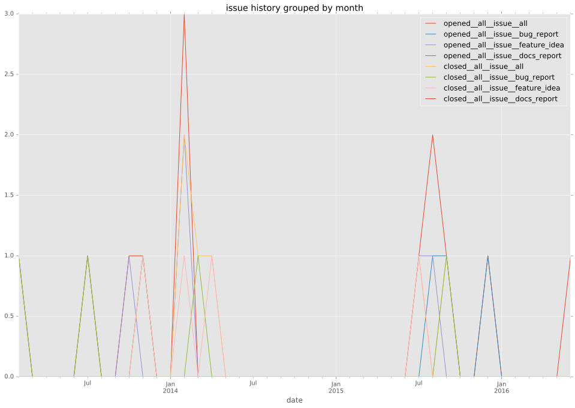
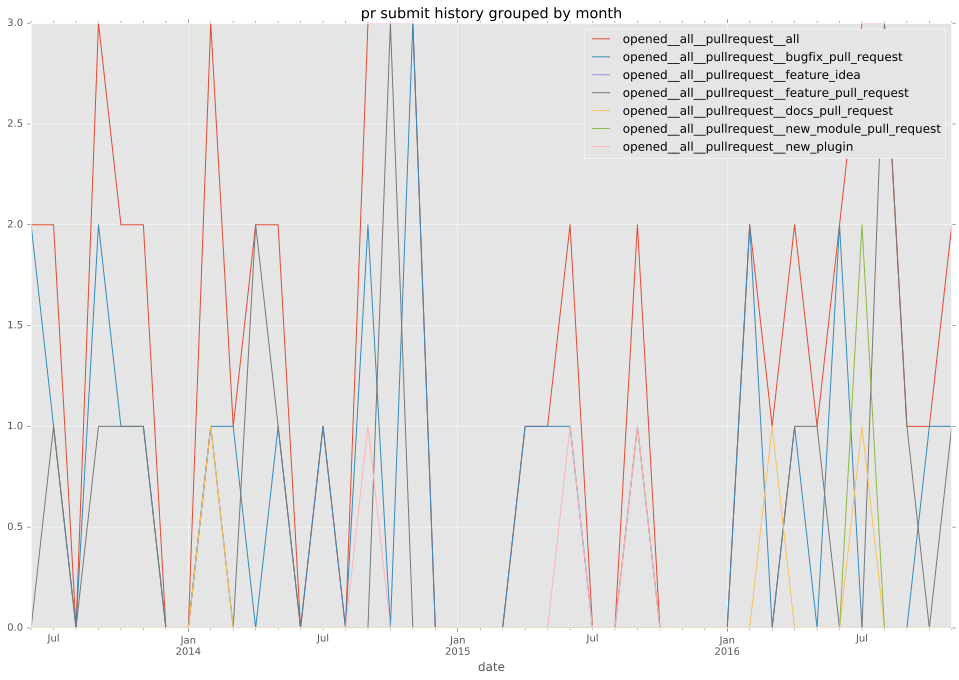
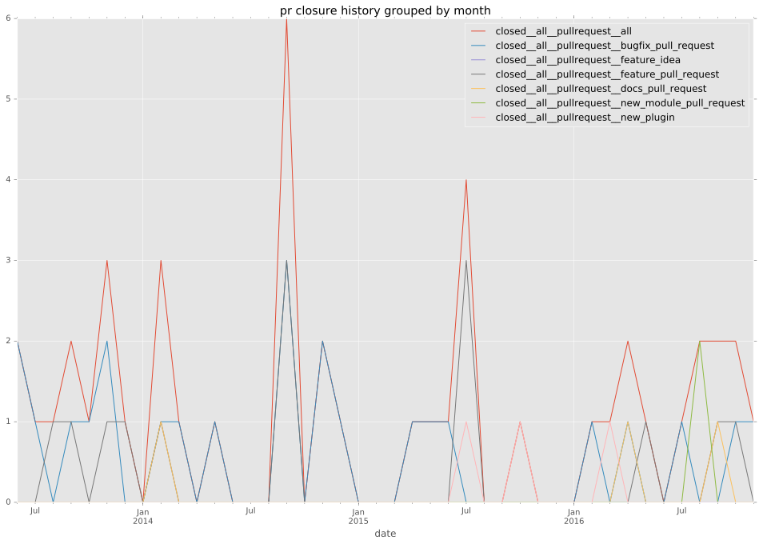

authors
- zbal
maintainers
- zbal
contributors
- bsdlp : 5 commits
- abadger : 15 commits
- gundalow : 1 commits
- mscherer : 2 commits
- alanfairless : 1 commits
- mpdehaan : 2 commits
- zbal : 144 commits
- jctanner : 2 commits
- wulczer : 1 commits
total issue counts
bugfix pull request: 25
docs report: 1
pullrequest: 49
docs pull request: 3
feature pull request: 18
feature idea: 5
issue: 13
new plugin: 4
bug report: 6
issue history

pullrequest history


days open by issue type
feature pull request
count: 19
std: 109.823595926
min: 0
max: 295
median: 6.0
mean: 73.0
all
count: 71
std: 70.2579896571
min: 0
max: 295
median: 2.0
mean: 33.3943661972
pullrequest
count: 0
std: nan
min: nan
max: nan
median: nan
mean: nan
docs pull request
count: 5
std: 32.0780298647
min: 0
max: 77
median: 14.0
mean: 21.0
docs report
count: 0
std: nan
min: nan
max: nan
median: nan
mean: nan
bugfix pull request
count: 35
std: 25.1820931443
min: 0
max: 138
median: 1.0
mean: 8.74285714286
feature idea
count: 4
std: 35.4870868533
min: 0
max: 73
median: 3.5
mean: 20.0
issue
count: 0
std: nan
min: nan
max: nan
median: nan
mean: nan
new plugin
count: 4
std: 86.029064856
min: 15
max: 199
median: 72.0
mean: 89.5
bug report
count: 4
std: 62.2434735535
min: 0
max: 127
median: 4.0
mean: 33.75
closures grouped by total days open